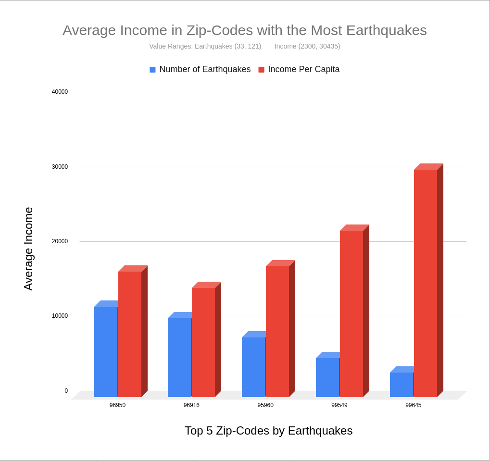

Property Pal
Home
Contact
Average Income of Frequent Earthquake Locations

Renters, developers and non-profits may benefit from an increased understanding of how a location's average income relates to that location's earthquake frequency.